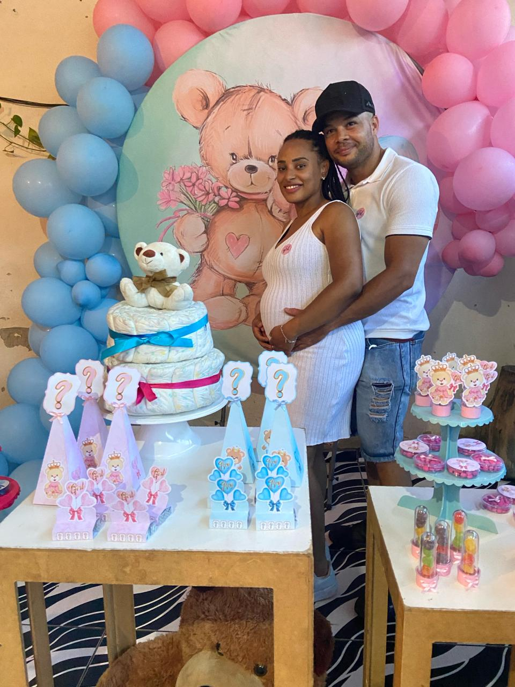

Página Inicial
Sobre Mim
Formação Acadêmica
Portfólio
Contato
Sobre mim

Olá, meu nome é Warley Bispo Brito, tenho 31 anos e nasci no estado de São Paulo. Durante os meus primeiros anos
de vida, morei em uma cidade no interior de Minas Gerais chamada Campos, dos meus 01 até 05 anos. Depois desse período, meus pais decidiram voltar a morar em São Paulo, mais precisamente na cidade de Pirapora do Bom Jesus -SP. Atualmente, sou casado há seis anos e estou prestes a ser pai de uma menina, que se chamará Heloisa. Eu sou uma pessoa extremamente ativa, sempre me dedicando a praticar atividades físicas, como musculação e andar de bicicleta. Acredito que cuidar da saúde é essencial para se ter uma vida longa e melhor. Além disso, sou apaixonado por música, principalmente o estilo ROCK nacional e internacional, e adoro estar sempre atualizado nas novidades da tecnologia. No momento, encontro-me matriculado no curso de Análise e Desenvolvimento de Sistemas, em busca de aprimorar meus conhecimentos nessa área. Acredito que os estudos e o caminho para um melhorar o futuro e desenvolvimento pessoal..